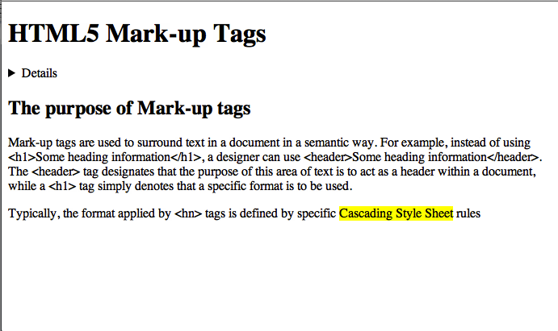

An example of the new HTML tags for semantic document mark-up
The purpose of Mark-up tags
Mark-up tags are used to surround text in a document in a semantic way.
For example, instead of using <h1>Some heading information</h1>,
a designer can use <header>Some heading information</header>. The
<header> tag designates that the purpose of this area of text is to act as a header
within a document, while a <h1> tag simply denotes that a specific format is to
be used.
Figure 1: This page without CSS
Mark-up and CSS
For the new mark-up tags to have a visible effect on a document, it is necessary to apply
style definitions to them, using CSS rules. For example, within the HTML content, a creator can
mark a section of text as being an <aside>. To then provide a suitable style for this, a
CSS rule can be created so that all <aside> tags appear in a box out to the right of the page,
with a border and a different background colour.
Summary: HTML5 provides several new tags for semantically marking up documents.